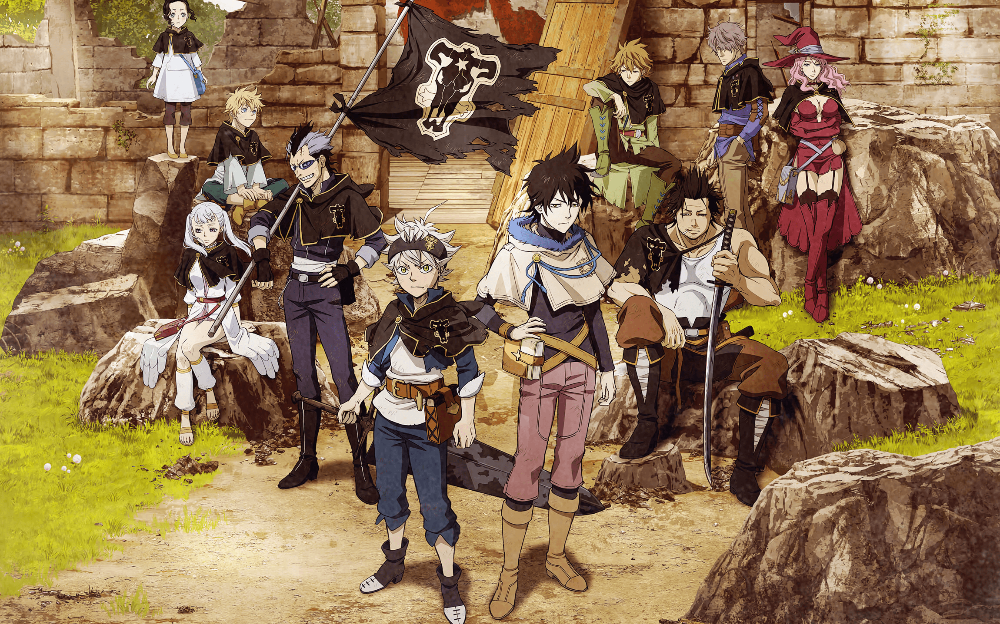

the adventures of Monkey D. Luffy and his pirate crew in order to find the greatest treasure ever
left by the legendary Pirate, Gold Roger.

Naruto Uzumaki, a young ninja who seeks recognition from his peers and dreams of becoming the
Hokage, the leader of his village.

Asta who raised in an orphanage with his fellow orphan, Yuno. He trains for become Wizard King
his rival yuno also want to become.